En el tercer semestre de la capacitación en TIC’s se desarrollan habilidades fundamentales en el uso de herramientas de oficina, principalmente Word y Excel. En Word se aprende a crear documentos formales, tablas, listas, organizadores gráficos y redacción de cartas. En Excel se trabaja con hojas de cálculo, funciones básicas, gráficas, organización de datos y herramientas que permiten resolver problemas matemáticos y administrativos. Este semestre es base para el manejo eficiente de la información digital.
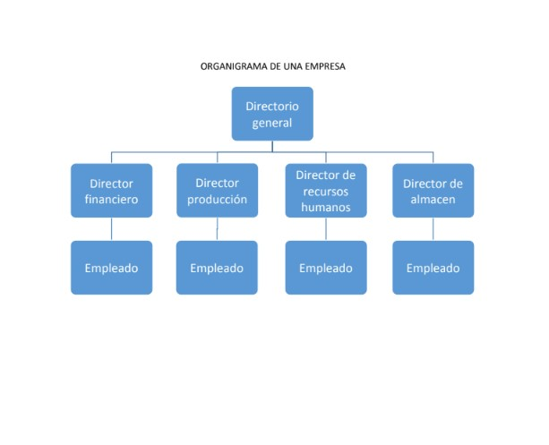
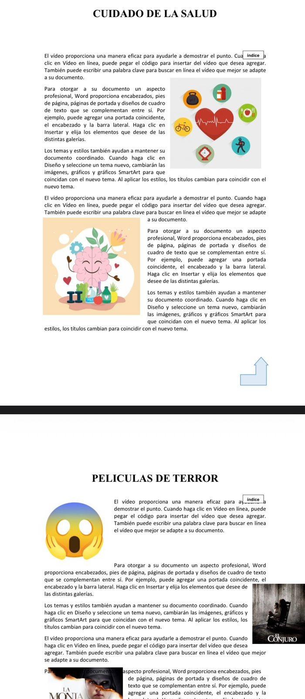
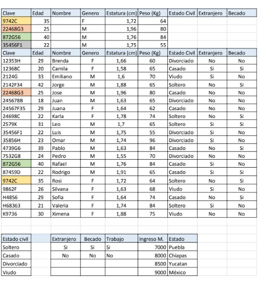
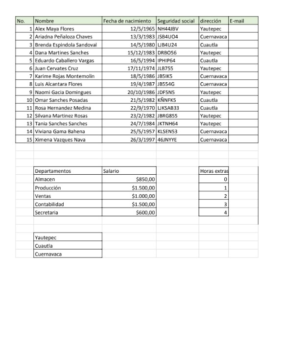
En este semestre aprendemos sobre el funcionamiento del equipo de cómputo y su mantenimiento, tanto físico como lógico. Se estudian las partes internas y externas de una computadora, así como el uso correcto del sistema operativo y herramientas de administración de archivos. Además, se analiza el impacto de las comunidades virtuales como redes sociales y blogs, comprendiendo su importancia en la comunicación actual y el uso responsable de la tecnología.
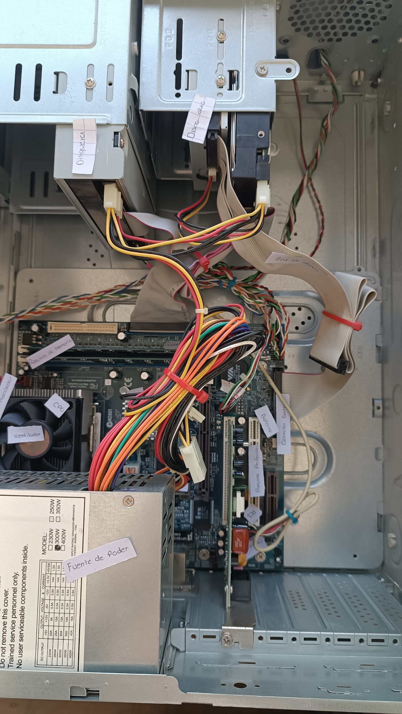
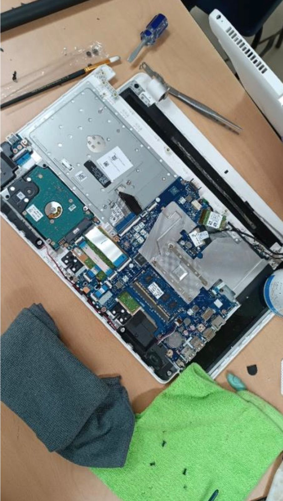
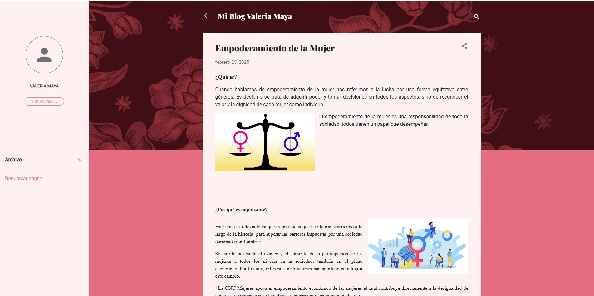
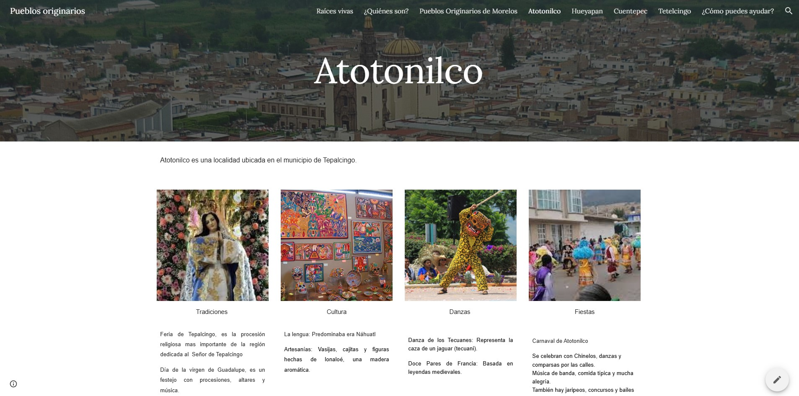
En el quinto semestre se introducen los fundamentos de la programación y los sistemas de información. Se aprende a desarrollar algoritmos mediante pseudocódigo, así como el uso de estructuras de control como condicionales y ciclos. También se estudian bases de datos, su organización y el uso de herramientas como Access y SQL para el manejo de información. Este semestre permite desarrollar el pensamiento lógico y habilidades para resolver problemas mediante la tecnología.
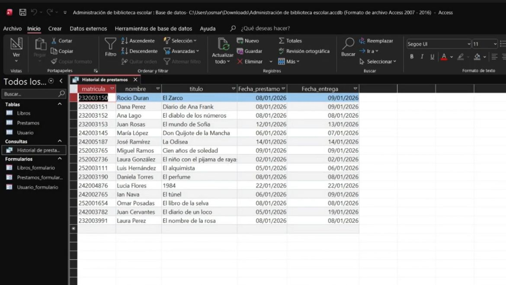
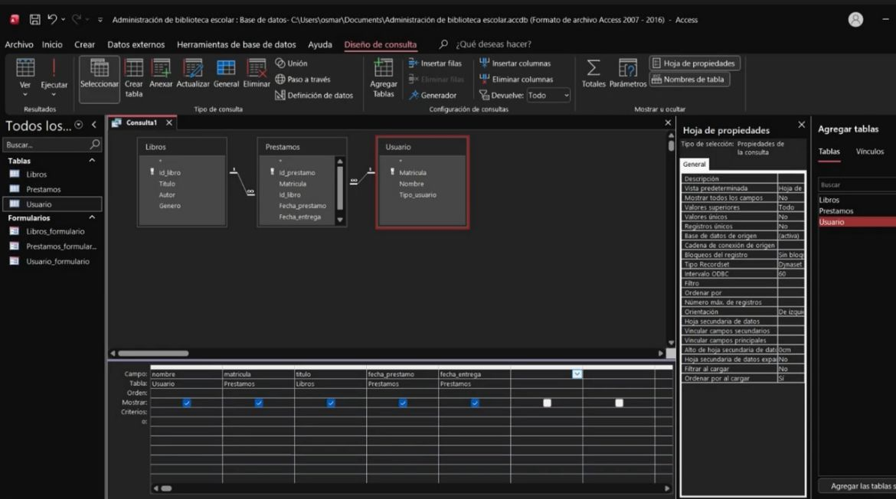
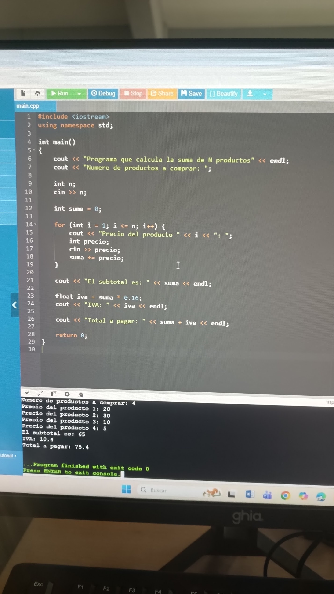
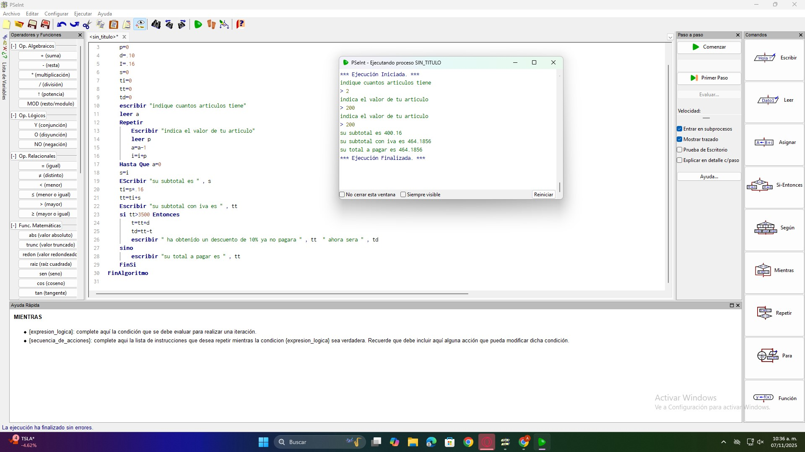
En el sexto semestre se enfocan los conocimientos en el diseño digital y el desarrollo web. Se utilizan herramientas de diseño gráfico como Inkscape para la creación de logotipos, carteles y elementos visuales mediante formas y colores. En el área de desarrollo web se aprende a crear páginas utilizando HTML y CSS, comprendiendo la estructura de un sitio web, su diseño y publicación. Este semestre permite integrar creatividad con tecnología para desarrollar proyectos digitales completos.
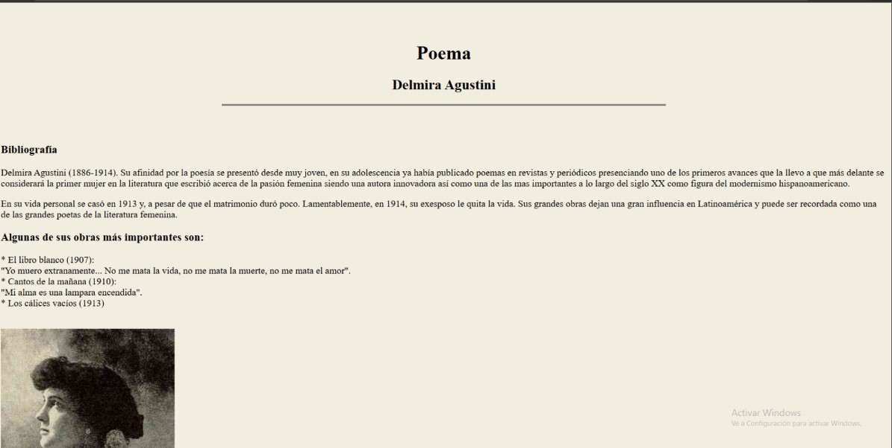
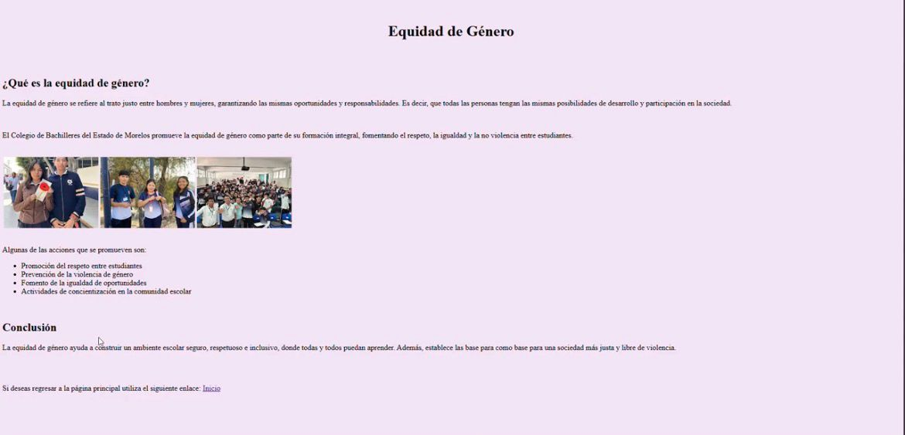
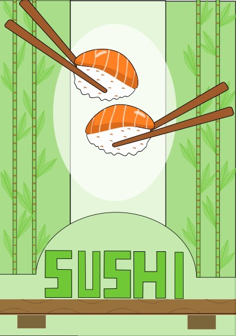
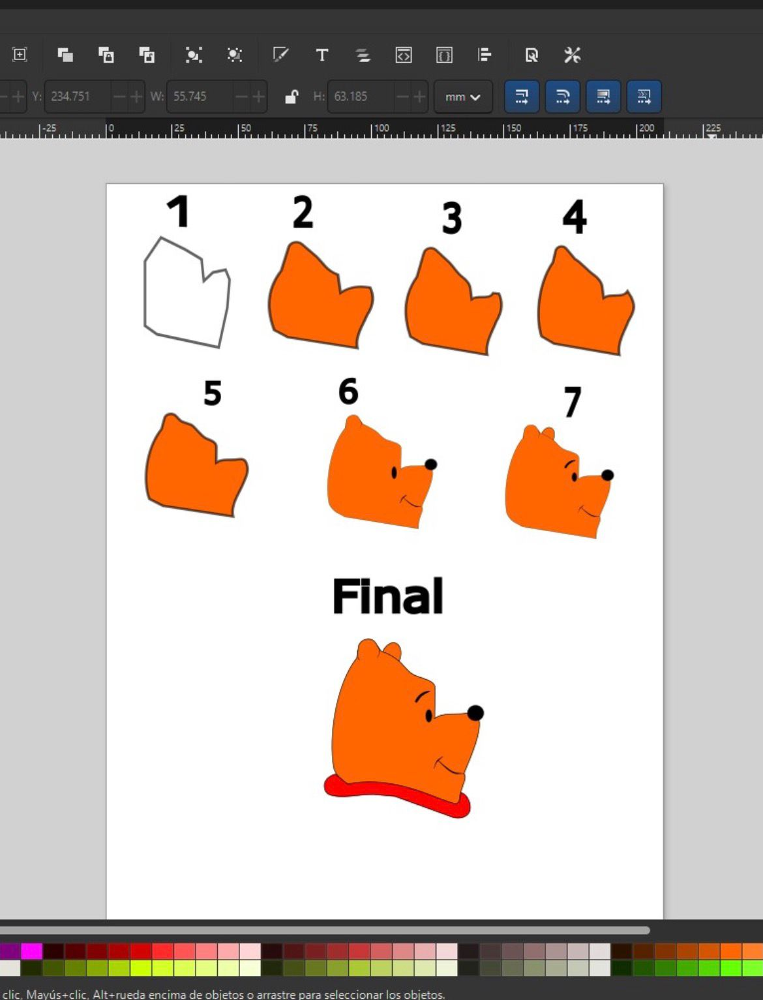